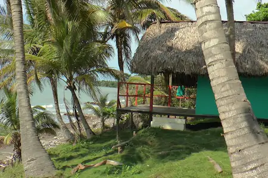
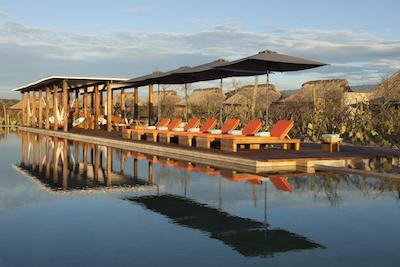
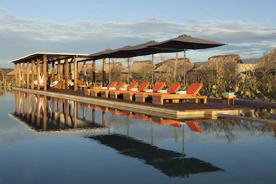

INTRODUCTION
Puerto Escondido is one of the ost beautiful cities ion the world!
It's well known for it's beautiful beaches and surf competitions. Puerto Escondido is also know for having a tasty cuisine and amazing Hotels that combine nature and luxury giving you a warm welcome enjoy life.
Please read this usefull advices that can help you have a better experience:
- Expect a relaxing mood
- It's usually very warm and it can rain
- The water is warm most of the time
- When surfing please follow the rules
- Beware of sharks!
You can visit any place for the most part but please do know that some places might be hard to reach and don't have road assistance or even a "road".

 
